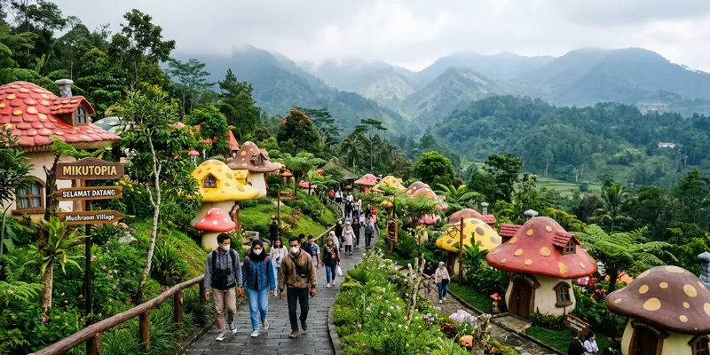

Mikutopia Batu adalah destinasi wisata bertema negeri jamur di Desa Tulungrejo, Kecamatan Bumiaji, Kota Batu, yang dibuka pada Maret 2026. Tempat ini cepat viral di media sosial, namun kemudian ramai dibicarakan karena masalah izin lingkungan dan sejumlah insiden keselamatan.
Ringkasan Inti
- Mikutopia Batu mulai beroperasi dengan uji coba pada 14 Maret 2026 dan grand opening pada 21 Maret 2026.
- Konsep utamanya adalah taman rekreasi bertema jamur raksasa dengan ratusan spot foto di lahan seluas sekitar 10 hektare.
- Popularitasnya melonjak lewat konten viral di Instagram dan TikTok selama masa uji coba gratis.
- Nama Mikutopia juga sempat ramai dibicarakan karena insiden meninggalnya pengunjung, wahana yang dilaporkan rusak, dan sorotan Satpol PP Kota Batu terkait dokumen lingkungan yang belum lengkap.
- Hingga kini, pengelola menyatakan operasional tetap berjalan sembari proses evaluasi perizinan berlangsung.
Apa Itu Mikutopia Batu?
Mikutopia Batu adalah taman wisata bertema dunia jamur yang dibangun di lereng kawasan Bumiaji, Kota Batu, dengan instalasi jamur berwarna-warni berukuran raksasa sebagai daya tarik utamanya. Destinasi ini dikelola oleh PT Batu Fantastic Garden dan mulai dibuka untuk uji coba pertengahan Maret 2026.
Konsep Mikutopia mengangkat tema fantasi ala negeri dongeng yang dipadukan dengan identitas lokal Desa Tulungrejo sebagai salah satu sentra budi daya jamur di Kota Batu. Wahana dan instalasi di dalamnya dirancang instagramable, dengan ratusan titik foto yang tersebar di lahan berkontur lereng gunung.
Nama Mikutopia sempat menimbulkan tafsir bahwa penamaannya sekadar mengikuti tren istilah bernuansa Jepang agar terdengar menarik, meski pengelola dan sejumlah laporan media menyebut ada makna yang dikaitkan dengan identitas lokal di balik konsepnya.
Di Mana Lokasi Mikutopia Batu?
Mikutopia Batu berlokasi di Dusun Junggo, Desa Tulungrejo, Kecamatan Bumiaji, Kota Batu, Jawa Timur, tidak jauh dari kawasan wisata Cangar dan lereng Gunung Arjuno. Kawasan ini dikenal beriklim sejuk dengan kabut tipis yang sering turun pada pagi dan sore hari.
Lokasinya berada di area perbukitan yang menjadi bagian dari kawasan hulu Malang Raya, sehingga aspek tata ruang dan lingkungan di sekitarnya menjadi perhatian serius pemerintah daerah maupun pemerhati lingkungan.
Akses menuju lokasi melewati jalan desa yang menurut sejumlah laporan sempat mengalami kepadatan signifikan saat kunjungan wisatawan melonjak, sehingga instansi terkait juga meminta kajian dampak lalu lintas atau Andalalin sebagai bagian dari proses perizinan.
Kenapa Mikutopia Batu Mendadak Jadi Perbincangan?
Mikutopia Batu mendadak ramai dibicarakan karena kombinasi antara viralnya konten wisata di media sosial dan munculnya sorotan publik terkait insiden keselamatan serta status izin lingkungan yang belum lengkap. Dua sisi ini membuat nama Mikutopia naik ke permukaan dalam waktu berdekatan.
Dari sisi positif, popularitas Mikutopia melonjak cepat karena masa uji coba gratis yang bertepatan dengan libur Lebaran 2026, sehingga banyak wisatawan berbondong-bondong datang dan membagikan pengalamannya di media sosial. Menurut laporan seru.co.id, antusiasme masyarakat terhadap destinasi ini disebut sangat tinggi selama masa uji coba yang bertepatan dengan momen libur lebaran.
Dari sisi lain, muncul sejumlah insiden yang menjadi sorotan, di antaranya laporan meninggalnya seorang pengunjung saat mengantre tiket masuk pada 23 Maret 2026 serta video viral yang memperlihatkan kepanikan pengunjung setelah salah satu wahana bernama Tiram dilaporkan mengalami kerusakan pada 3 April 2026.
Persoalan lain yang turut memicu perbincangan adalah temuan Satpol PP Kota Batu bahwa Mikutopia belum memiliki dokumen lingkungan hidup lengkap seperti SPPL, UKL-UPL, dan Amdal saat mulai beroperasi. Berdasarkan laporan Malang Posco Media edisi 6 April 2026, terdapat pula ketidaksesuaian luas lahan antara izin awal sekitar 7,76 hektare dengan kondisi riil yang mencapai sekitar 10,1 hektare.
Bagaimana Sejarah Berdirinya Mikutopia Batu?
Mikutopia Batu mulai beroperasi dengan masa uji coba pada 14 Maret 2026 dengan tiket masuk gratis hingga 20 Maret 2026, sebelum resmi menggelar grand opening pada 21 Maret 2026. Momentum peluncurannya sengaja bertepatan dengan periode libur Lebaran 2026 untuk menarik kunjungan wisatawan secara maksimal.
Selama masa uji coba gratis tersebut, jumlah kunjungan dilaporkan meningkat signifikan bahkan setelah periode gratis berakhir, menurut laporan niagatour.com yang diperbarui pada 21 April 2026. Popularitas ini turut didorong oleh konten video pendek yang membagikan suasana kabut dan instalasi jamur raksasa di lokasi.
Namun, tidak lama setelah pembukaan, muncul sorotan dari Satpol PP Kota Batu yang menyebut pihak pengelola telah menerima surat resmi terkait kelengkapan izin sejak 12 Maret 2026, sebelum masa uji coba dimulai. Pengelola disebut tetap melanjutkan operasional uji coba meski proses perizinan belum tuntas.

Desain arsitektur rumah jamur dan jalan setapak bertingkat menghadirkan nuansa negeri dongeng di alam pegunungan Tulungrejo Bumiaji.
Apa Saja Wahana dan Daya Tarik di Mikutopia Batu?
Daya tarik utama Mikutopia Batu adalah instalasi jamur raksasa berwarna-warni yang tersebar di berbagai zona taman, dipadukan dengan wahana interaktif dan area foto bertema fantasi. Konsep ini menyasar pengunjung dari berbagai usia, mulai keluarga dengan anak-anak hingga wisatawan dewasa yang mencari spot foto estetik.
Beberapa laporan media menyebut Mikutopia memiliki ratusan titik foto serta beragam wahana, salah satunya wahana bernama Tiram yang sempat menjadi sorotan setelah dilaporkan mengalami kerusakan saat digunakan pengunjung. Area taman juga menghadirkan unsur edukasi mengenai budi daya jamur, mengingat Desa Tulungrejo dikenal sebagai salah satu sentra jamur di Kota Batu.
Karena berada di lahan berkontur lereng dengan luas sekitar 10 hektare, pengunjung disarankan menggunakan alas kaki yang nyaman untuk berjalan cukup jauh selama menjelajahi area wisata ini.
Apakah Mikutopia Batu Aman Dikunjungi Saat Ini?
Keamanan Mikutopia Batu perlu dipertimbangkan secara hati-hati karena status perizinan lingkungannya masih dalam proses evaluasi dan pernah terjadi insiden yang melibatkan keselamatan pengunjung. Sebelum berkunjung, calon wisatawan sebaiknya mengecek informasi terbaru dari sumber resmi.
Berdasarkan penelusuran Satpol PP Kota Batu, destinasi ini belum mengantongi dokumen lingkungan hidup lengkap saat mulai beroperasi, dan sempat menerima surat larangan operasional sementara. Di sisi lain, kuasa hukum pengelola menegaskan pada 9 April 2026 bahwa belum ada tindakan penyegelan resmi dan operasional tetap berjalan.
Pemerintah Kota Batu, melalui koordinasi lintas dinas seperti Dinas Lingkungan Hidup dan Dinas Perhubungan, menyatakan akan menentukan langkah lanjutan berdasarkan hasil evaluasi teknis di lapangan. Karena situasi ini dapat berubah, pengunjung disarankan memantau kanal resmi Mikutopia dan pemerintah setempat sebelum merencanakan kunjungan.
Kesalahan Umum Saat Merencanakan Kunjungan ke Mikutopia Batu
Beberapa kesalahan umum yang sering dilakukan calon pengunjung antara lain tidak mengecek status operasional terkini, datang tanpa alas kaki yang sesuai untuk medan berkontur, serta mengabaikan potensi kepadatan di jalur akses menuju lokasi.
Karena lokasi berada di kawasan perbukitan dengan akses jalan desa, kepadatan lalu lintas pernah menjadi perhatian instansi terkait, terutama saat kunjungan melonjak pada masa libur. Wisatawan yang datang pada akhir pekan atau musim liburan sebaiknya mengalokasikan waktu tambahan di perjalanan.
Kesalahan lain adalah tidak memperhatikan cuaca setempat. Kawasan Bumiaji dikenal bersuhu sejuk dengan kabut yang bisa turun sewaktu-waktu, sehingga pakaian hangat dan alas kaki tertutup lebih disarankan dibanding sandal biasa.
Kesimpulan
Mikutopia Batu adalah destinasi wisata bertema negeri jamur di Bumiaji, Kota Batu, yang viral berkat konsep visualnya yang unik, namun juga menjadi sorotan karena persoalan izin lingkungan dan insiden keselamatan pada masa awal operasionalnya. Sebelum berkunjung, disarankan memeriksa status terbaru operasional dan perizinan melalui kanal resmi. Simak juga profil lengkap wisata negeri jamur Mikutopia serta panduan wisata seputar Kota Batu lainnya.
FAQ Seputar Mikutopia Batu
Mikutopia Batu adalah taman wisata bertema dunia jamur di Desa Tulungrejo, Kecamatan Bumiaji, Kota Batu, yang dikelola oleh PT Batu Fantastic Garden dan mulai beroperasi pada Maret 2026.
Mikutopia Batu berlokasi di Dusun Junggo, Desa Tulungrejo, Kecamatan Bumiaji, Kota Batu, Jawa Timur, tidak jauh dari kawasan Cangar dan lereng Gunung Arjuno.
Mikutopia Batu jadi kontroversi karena Satpol PP Kota Batu menemukan dokumen lingkungan hidup yang belum lengkap saat operasional berjalan, ditambah insiden meninggalnya seorang pengunjung dan laporan kerusakan salah satu wahana.
Berdasarkan laporan terakhir yang tersedia, belum ada penyegelan resmi terhadap Mikutopia Batu, dan pengelola menyatakan operasional tetap berjalan sembari proses evaluasi izin berlangsung. Status ini dapat berubah, sehingga disarankan memeriksa informasi terbaru sebelum berkunjung.
Daya tarik utamanya adalah instalasi jamur raksasa berwarna-warni, ratusan spot foto bertema fantasi, serta suasana sejuk berkabut khas Bumiaji.